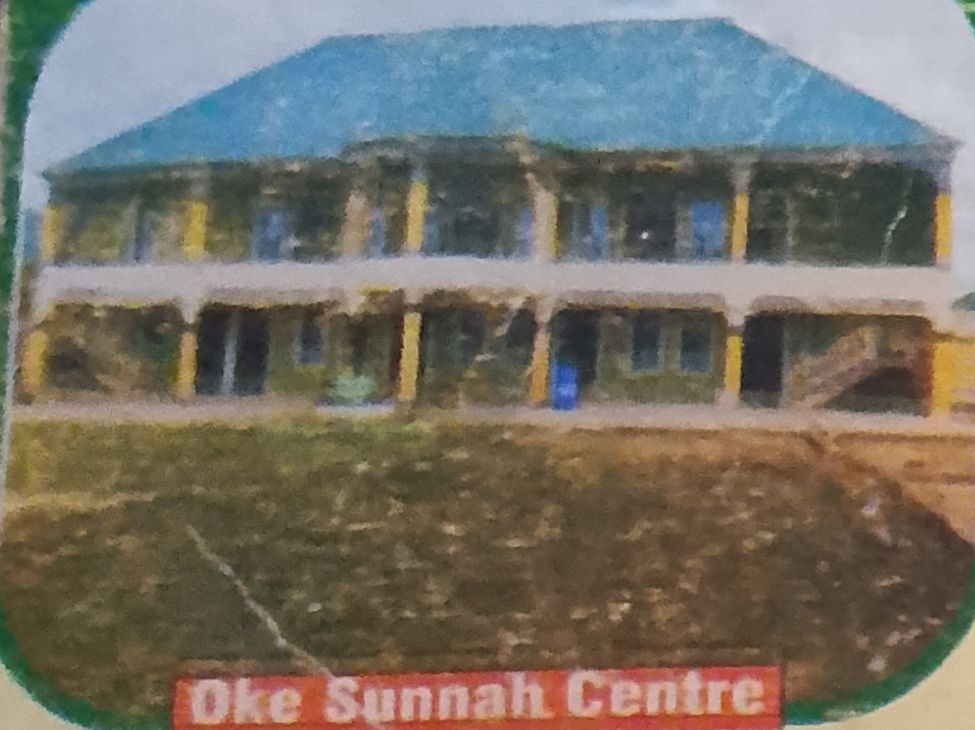
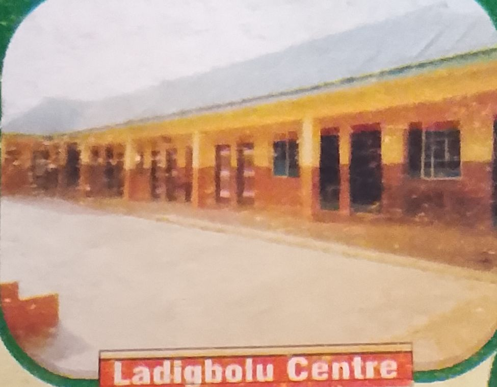
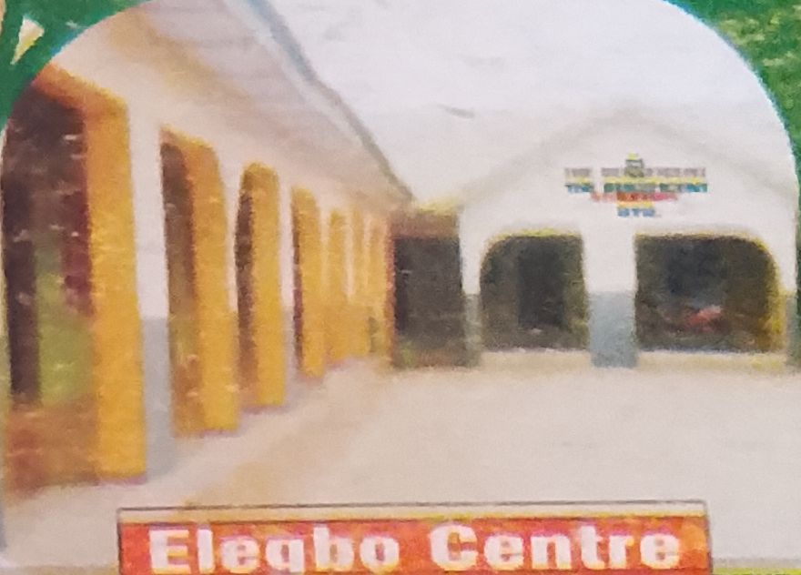
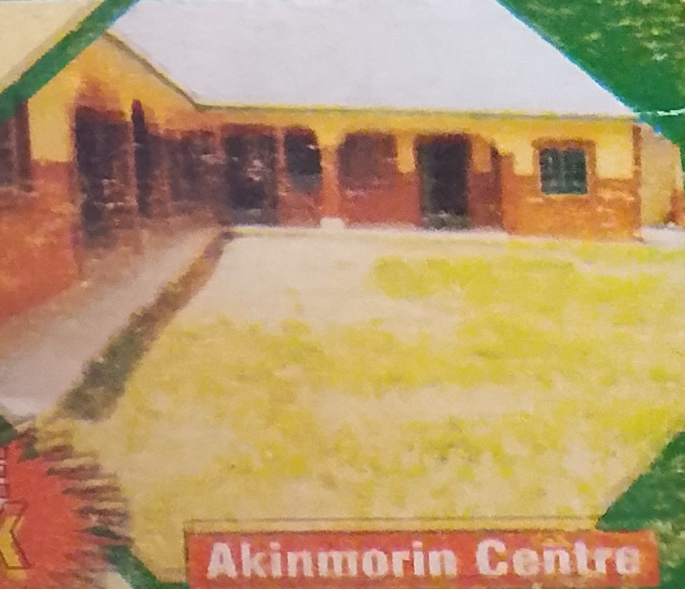

Raising a Generation of Knowledge, Character & Faith
Apply NowMUS'AB AL-KHAYR ISLAMIC SCHOOLS is a full-fledged Islamic institution dedicated to producing intellectually sound, morally upright, and spiritually guided students. We combine Western education with Islamic teachings to prepare children for success in both worlds.
To nurture a generation of students who are knowledgeable, disciplined, morally upright, and God-conscious, combining the best of Islamic and Western education.
To be a center of excellence in Islamic and academic education, producing leaders of character and faith.
Faith • Excellence • Integrity • Respect • Responsibility • Discipline




Our students showcased amazing projects combining knowledge & Islamic values.
Annual Qur’an recitation and memorization competition was held successfully.
Encouraging teamwork, discipline, and fitness among students.